妙光寺山
| 日付 | 2008年12月28日（日） |
|---|---|
| 山域 | 近畿の山 |
| メンバー | 家族（父） |
| 山行形態 | 日帰り |
| アクセス | 徒歩 |
| ルート (Map) | 家→妙光寺山→三上山分岐→家 |
久々に実家に帰って来た。特にやることもないので山に行くことにする。
行先は家のすぐ裏にある妙光寺山。
毎日眺めてきた山だが、登山道があることは知らなかった。
9:00 家を出てのんびりと登山道入口に向かう。
どんなに低い山でも、家から直接行ける山があるのはうらやましい。
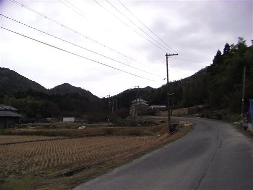
程なく登山道入口に到着。入口には柵が設けられている。
猪が出没するかららしい。関東近辺では鹿が多いが、この辺りは猪が多いようだ。
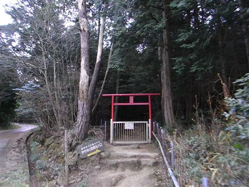
山腹には祠が祀られている。
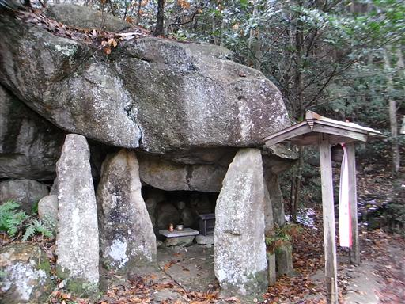
見上げると小さな魔崖仏が彫られている。
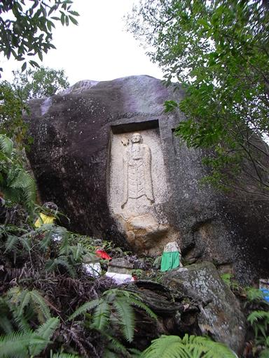
登山道にロープが張られていて、11月17日まで入山禁止になっている。
この辺りは松茸が採れるので、その時期になると入山は制限されてしまう。

登山道は一面シダで覆われている。
この辺りの山はシダが非常に多いが、これも関東近辺ではあまり見かけない景色だ。
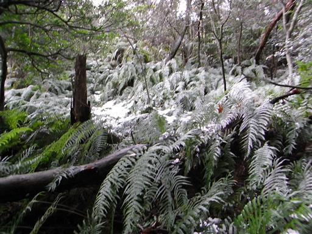
山頂近くに来ると、三上山が目の前に現れる。
近江富士とも呼ばれる滋賀県の名峰で、遠くからでもよく目立つ山だ。
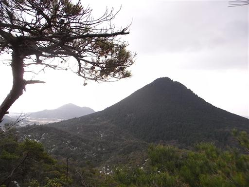
藪っぽい道をたどって最後の一登りで山頂に到達する。
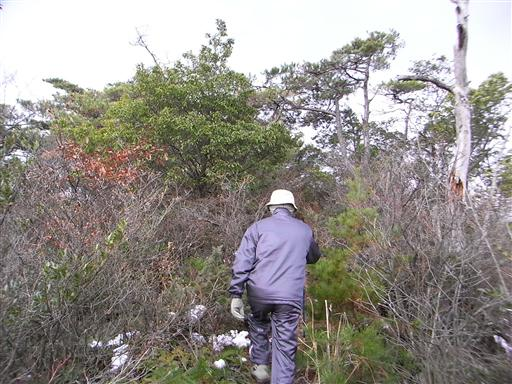
9:55 妙光寺山山頂到着。標高270m。
山頂は雑木に覆われ展望は全くない。
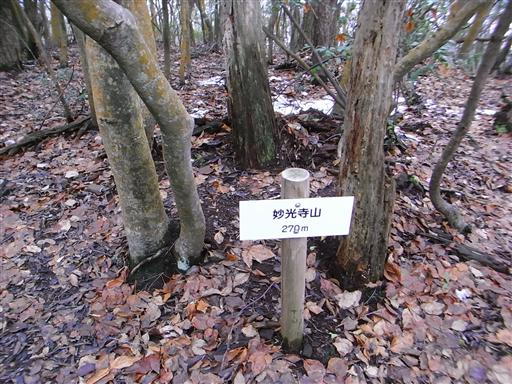
下山道を歩いていくと、所々で展望が広がる。
今日はあまり天気がよくなく、空はどんよりとしている。
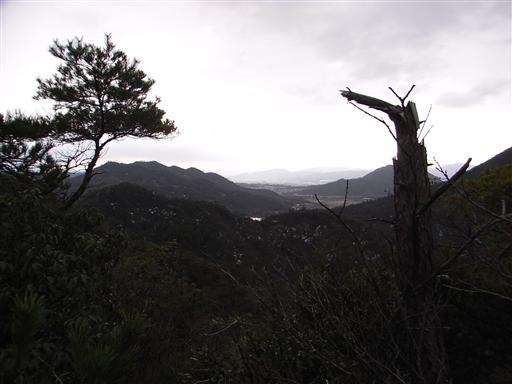
下山地点にある寺に到着。
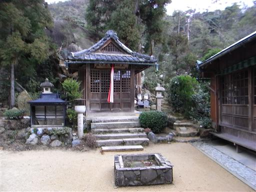
割と小さな寺で、人影はほとんどない。
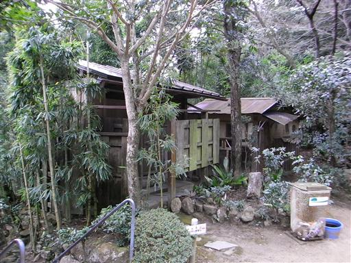
小さな人工の滝がある。滝に打たれる修行をするためのものだろうか？
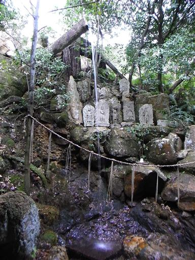
寺の門をくぐって、参道を下っていく。
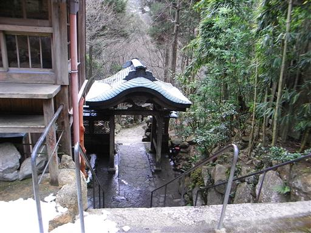
寺に通じる道には、所々に教訓の書かれたプレートが点在している。
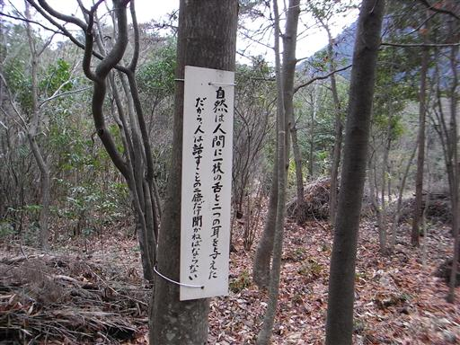
下りきった山の麓に三上神社がある。この神社にもお参りして行く。
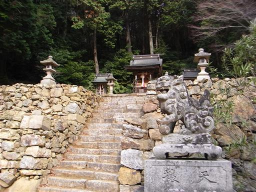
11:00 帰宅。
2時間程度の散歩だった。
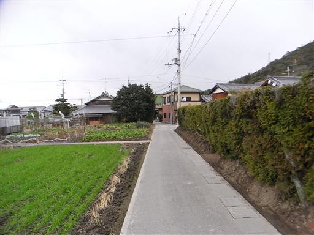